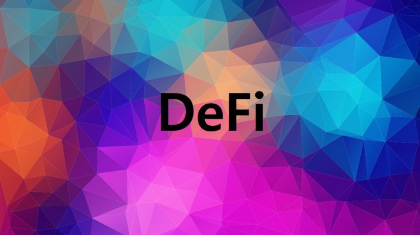

DeFi의 성장과 이더리움의 상승은 현재 진행형

현재 이더리움의 핫이슈는 DeFi 생태계로 지난 몇달동안 이더리움의 가격
상승을 이끌어 왔다. 3월 코로나19바이러스로 암호화폐 시장이 붕괴한
직후 5억 3,980만 달러의 TVL 수치에서 현재 45억 8천만 달러까지 급격한
상승을 이루어 냈다. DeFi 부문은 지난 몇달 동안 급등했지만 이더리움의
밸류에이션은 그렇지까지 크지 않았다. 이더리움은 DeFi의 기본 계층으로
남아 있지만 현재 이더리움의 주요 기능은 가스 가격을 지불하는 매개체
역할을 하는 것 뿐이다. 사실, DeFi의 담보 형태로도 ETH는 네이티브
DeFi 토큰으로써의 가치로만 보아도 저평가된 상태다. 그렇다면 DeFi가
현재 어디까지 급성장하고 있다는 것일까? 대답은 최근 컴파운드 및
yEarn Finance의 자체 거버넌스 토큰 출시 이후 인기로 인한 급증에서
찾을 수 있다. 컴파운드와 YFI의 성과의 산물로서 섹터의 성장을
특성화하는 것은 여전히 이더리움의 베이스에 의해 과소평가 될 수
있지만 이러한 특성화는 해당 부문의 시가 총액을 시장의 일부 암호화폐
자산 및 비트트인과 이더리움에서 공개적으로 거래되는 레이어 1과
비교해보면 분명하게 설명된다. DeFi의 TVL YTD가 600%나 성장한
요인에서 몇 가지 주요 구조적 요소가 있으며, 그중 두가지 요소는
참고할만하다. 첫번재는 외생적 현금 흐름 형태의 실질적인 수익률과
두번째는 거대한 커뮤니티의 참여다. 첫 번째 요점인 외생적 현금 흐름을
통해 토큰 보유자에게 실제 가치와 실제 수익을 창출하는 통화 모델에
영향을 미쳤다는 주장이며, 참가자는 USDC / ETH / BAL을 판매하여 얻은
수익을 재투자하거나 지분을 스테이킹하여 네트워크의 더 큰 부분을
효과적으로 소유할 수 있게 된다. 따라서 토큰이 스테이킹됨에 따라
토큰에 대한 구매 압력을 불러 일으켜 네트워크에서 Total Value Locked
수치를 더욱 높이는 개발이다. 두 번째 요소인 커뮤니티는 DeFi 부문의
최근 성공을 결정하는 데 있어 첫 번째 요점보다 똑같이 중요하다.
커뮤니티와 거버넌스가 중요한 이유 중 하나는 탈 중앙화를 강화시키가
때문이다. 특히 비트코인과 암호화폐 산업이 중앙 집중화되는 것을
우려했던 사람들에게 DeFi의 출현은 하늘의 계시처럼 보였다.
결론적으로, DeFi 부문이 얼마나 더 성장할지 알수 없지만 표면적으로는
암호화폐 시장에 의해 왜소해졌음에도 불구하고 이 부문은 현재 강력한
펀더멘털을 유지하고 있다. 일부는 DeFi 시장이 긍정적인 상황에서
부정적인 루프에 갇혀있다고 주장할 수 있지만 아직까지 암호화폐
시장에서 DeFi의 성장은 현재 진행형이다.